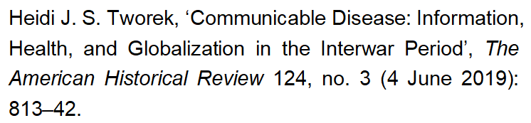

收录于合集
作品简介
【作者】 Heidi J. S. Tworek（海迪·托莱克）是加拿大英属哥伦比亚大学国际史系助理教授，哈佛大学历史学与经济学联合中心访问客座研究员。她的研究兴趣主要是新闻与媒体、国际关系、公共政策、国际组织等的历史。其代表作为News from Germany: The Competition to Control World Communications, 1900-1945 （Harvard University Press, 2019）。
【编译】 周玫琳（国政学人编译员，伦敦大学亚非学院历史系博士研究生）
【校对】 施榕
【审核】 陈勇
【排版】 吴俣
【来源】

期刊介绍
The American Historical Review（《美国历史评论》）是美国历史学会（AHA）的官方出版物，创办于1895年，宗旨为“促进历史研究、对历史文件与遗物的收集与保存，传播历史研究成果”。2018年该刊的影响力因子为1.456，近五年平均影响因子为1.639，在历史学类期刊（95种）中位列第2 名。
可“传播”的传染病：两次世界大战间的信息、健康与全球化
Communicable Disease: Information, Health, and Globalization in the Interwar Period
Heidi J. S. Tworek
内容提要
“全球化”通常被定义为人员、货物和信息在世界范围内增加的移动，但全球化和逆全球化的方方面面并非同时发生。本文利用一个国际健康信息网络的发展，探究为什么信息的全球化与移民和贸易的全球化步调不一。从各国意识到疾病是一个跨国问题，到国际联盟卫生组织（League of Nations Health Organization）把国家、帝国和基金会联结在一个健康信息的志愿性交流体系中，经历了将近70年 。该体系覆盖了全世界三分之二的人口，且生命力比国联更持久。借助新无线电技术，基于殖民网络、港口城市、海洋与天空，国际联盟卫生组织构建了一套新基础设施，其中新加坡与西贡的地位比日内瓦更重要。健康信息原本旨在预防流行病，但它也使国际联盟卫生组织作为标准化技术信息中转方的身份正当化，帮助英法等殖民大国分摊帝国的财政负担，为日本等其他国家提供军事优势，让德国参与国际事业以重获国家声望。追溯这些基础设施的历史，有助于历史学家们克服“国家”、“国际”、“帝国”与“全球”之间的人为界限。
本文所利用的详实史料主要来自日内瓦国际联盟档案馆，部分来自英国国家档案馆和大英图书馆等其他机构。
**
**
文章导读
一、 导言：信息、健康与不共时的全球化
本文始自一个生动的历史片段：1929年，一艘从孟买途经马赛最终驶向利物浦的客船上出现天花，关于天花爆发的信息迅速传播，造成了欧洲范围内的恐慌。法国禁止那些未及时注射天花疫苗的英国游客入境。对此，英国《卫报》对法国人的“夸大”和“剧烈预防措施”表达了不满，因为实际上客船上只有一人感染了天花。当英国方面的抗议未能奏效时， **国际联盟卫生组织（ League of Nations Health Organization, 下文简称LNHO，“国际联盟”简称“国联”）**适时出面平息了相关风波。
通过讲述这段故事，本文引出其核心论点： **LNHO 的体系说明了信息流动为何且如何能够在人员与货物流动减少的时期不减反增。**西方国家自19世纪中叶已开始重视传染病信息（例如霍乱）以实现有效地检疫和流行病预防，但各国之间相互协调的信息交换迟迟未出现，直到LNHO的健康信息传播体系出现。这一志愿体系产生自经济全球化与大规模人员流动退潮之时，它覆盖了全球三分之二的人口并使信息在流行病管理中发挥关键作用。LNHO在第二次世界大战中存续下来，为今天的世界卫生组织（WHO）奠定了基础。
国际健康信息体系令人意外地形成于 两次世界大战间时期（interwar period ，下文简称“战间期”），很少受到学界关注，但对该体系的考察能让历史学家不再仅仅关注信息如何促进了全球化。对“全球化”的经典定义是人员、货物和信息在全球范围内的流动。相应地，“逆全球化”则指更具限制性的移民和经济政策，以及孤立主义。但是，正如全球化的方方面面并不是同时发生一样，逆全球化也是如此。 在既有的关于“全球化”与“逆全球化”的讨论中，战间期通常被表述为“逆全球化”的典型代表，但是这一认知在信息上是不成立的。
**这一问题的关键在于基础设施，即 “包括铁路、高速公路、电话、电力和互联网等在内的大型、耐久、运转良好的系统和服务”。**这些基础设施使得信息的传播更易实现。长期以来，历史学家对基础设施的研究都抱有兴趣。关于信息基础设施传播，有三种主流的史学叙述：第一种聚焦政治与军事控制，第二种重视媒体和技术公司之间的经济合作，第三种走中间道路，强调政治经济或“国家与市场关系”。 但它们均忽略了国际组织的重要角色。 在这些叙述中，国际组织的作用更多是建立技术标准，而不是信息的收集者或内容的创造者。
信息交流不一定与其他国际或帝国的互动同步发展。LNHO制作的地图中呈现的基础设施并非受民族国家号令，而是受制于港口城市、殖民网络、海洋和天空等。国家和帝国的界限从来都不是沟通的边界。 **20 世纪初无线电技术的发展为支配海洋与天空提供了新方法，也使得LNHO能够将民族国家、帝国和基金会统合为一个延续至今的新型国际健康信息体系。LNHO的流行病情报系统提醒我们，不应假定全球化与国际合作的方方面面是同时发生的。**战间期，人员流动更受限制，领土边界得到加强，但信息交流在其他合作崩溃后依旧存续，尽管在各国政治对抗的高潮时期也未能完好无损。
二、 如何开端？LNHO国际健康信息体系的演变
有关疾病监控的系统性国际交流发展较晚，这体现了信息的全球化如何且为何与移民和贸易的全球化步调不一。 从各国意识到疾病是一个跨国问题，到一个旨在交换流行病信息的全球性基础设施网络出现，经历了将近 70年。
类似交换信息的尝试开始于19世纪中期。在19世纪30-40年代霍乱疫情爆发的背景下，欧洲各国政府于1851年召开首届国际卫生会议（International Sanitary Conference），但具体成效甚微。在殖民诉求的驱动下，西方国家继续召开国际卫生会议，但在机制创设上动作缓慢。1902年，第一个国际健康组织泛美卫生局（Pan- American Sanitary Bureau）成立；1907年，旨在协调国际卫生会议的国际公共卫生署（Office International d’Hygiène Publique，下文简称OIHP）在巴黎成立。与此同时，其他针对健康问题的组织开始出现。包括英国在内的帝国建立了医学机构，如1899年成立的伦敦卫生与热带医学学校。他们的健康政策强化了殖民结构：医学话语往往试图令种族等级秩序合理化。流行病控制也协助处理了帝国担忧的问题，包括“殖民疾病”与健康管理成本。
LNHO的出现使得疾病信息的非系统采集发展为一个综合全面的体系。最初促使LNHO诞生的直接动力并不是各国的殖民关切，而是 1918-1919年比一战造成更多死亡人数的大流感（又称“西班牙流感”）和1916-1920年肆虐东欧与俄罗斯的伤寒。1920年12月，国联大会通过一项设立健康委员会（Health Committee）的决议。几经易名改革，1928年该委员会自立门户，正式成为LNHO。LNHO聘用顶尖的公共卫生与医疗专家，在包括中国在内的世界各地展开了各种健康项目。这一崭新的国际健康协调机构将工作重心放在信息（尤其是标准化数据）上。成立于1921年的流行病情报部（Epidemiological Intelligence Service）是LNHO的核心业务之一。
**LNHO 信息战略的根本在于为流行病信息的采集和传播搭建出一套新的基础设施，其关键就是国联第一次设在欧洲之外的部门：远东健康局（Far Eastern Health Bureau），亦称东方局（Eastern Bureau）。**该部门于1925年设立于新加坡，其选址反映了三组利益的交汇：国联自身的信息战略，英帝国的传播网络，以及LNHO主要资助方——洛克菲勒基金会的偏好。洛克菲勒基金会长期坚持认为信息和数据是公共卫生的支柱，因此收集流行病情报是东方局的“主要职能”。新加坡之所以能够成为健康信息枢纽，也是因为东方局应用了无线电报这一新技术，跨越了帝国边界，建立了可持续的信息基础设施。无线电技术从在一战期间得到显著改进，还成为一种“一对多”的通信手段。有了这些发展，即使帝国和民族国家在陆上存在竞争，它们仍可以在海空领域开展合作。
**在领土边界愈发森严的年代，无线电的兴起让 LNHO（在技术上）可能成为各国之间信息交流的中转方。LNHO将国家（national）与帝国（imperial）的无线电信号塔相联结，形成了一种运作方式迥异而持久的国际合作体系。**各个国家和帝国首先默许了流行病情报的新“干涉”，因为他们了解这对各自经济的好处，特别是帝国担心疾病会影响海上贸易，信息的交流能为它们提供解决的办法。帝国主义的贸易动机有助于解释为什么国际健康信息体系在非洲西部沿岸的存在感较低：信息的交流更聚焦在途经印度洋和大平洋到达欧洲的主要贸易线路上。东方局迅速采用了无线电技术来传播流行病情报，然而相比技术的新颖，东方局选择传播的疾病信息也呈现出19世纪的殖民主义取向，旨在保护欧洲免受霍乱等“东方”疾病的侵害。
LNHO和东方局起初的任务与OIHP多有重叠冲突。1926年在巴黎签署的《国际卫生公约》分离了OIHP和LNHO的任务，还给予了东方局独立的运作空间，让各政府先将信息传给新加坡而非OIHP，再由新加坡向OIHP发送流行病信息与周报。
三、如何工作？东方局与流行病情报的产生
东方局的流行病情报经由采集、校勘和分发三个阶段产生。 每周一至周三，东方局接收各地关于天花、霍乱、鼠疫等最新数据的电报与邮件。英属印度的信息仅在周四才送达，因为德里的官员们需要花更长的时间从印度各省收集信息。电报提供数字，信件传达有关死亡率、气象条件和灭鼠措施等信息。
流行病情报的基础设施加强了空域和海域的合作，也使历史学家能通过追溯信息采集与分发网络的产生与运作 ，来克服“国家”、“国际”、“帝国”与“全球”等人为界限。东方局接收的大多信息来自太平洋和印度洋中的“海洋小镇”，这些港口城市是公卫官员和医生们与当地人口交流以及确定疾病类别的枢纽。到20世纪30年代早期，LNHO的网络已覆盖45个国家和三分之二的世界人口。但是，全球化并不总是一个同步发生的过程，即使20世纪30年代的经济大萧条重创了全球贸易网络，关于流行病的情报网络依然在扩展，这部分是因为洛克菲勒基金会仍在继续资助LNHO。
LNHO国际体系的繁荣也受益于它将各帝国与国家的信息标准化的努力，毕竟来自世界各国的信息对疾病的描述五花八门。随着时间推移，LNHO将流行病情报的内容与形式都进行了标准化，令更多信息传播得更远。值得指出的是，数据的背后是重要的个体。不计其数的档案和信息不仅经常掩盖了国际组织中女性工作者艰苦卓绝的数据整理工作，也让人忽略了在一线采集数据的医生与当地人的功劳。不仅如此，数据也隐藏了不满与困难。英德等国政府其实对东方局不够精确的报告和数据统计方式颇有微词，不过，对于统计方法的抱怨从未阻挡各国参与其中。
经过数据校勘，东方局和日内瓦会立即或定时分发信息。如果某港口或政府的卫生部门在其常规时间之外发送报告流行病的电报，东方局会立即联络OIHP和易感染地区。国联官员们也会主动搜寻这类消息。在平时，东方局创设了两种标准周报，通过邮件或无线电发送。无线电是LNHO的首选，因为只有这种方式可以联系海上的船只，经济上更便宜，技术上能实现一对多，从而保证更广更快的信息分发。东方局还发布年度报告，为日内瓦总部提供其活动记录，也向洛克菲勒基金会争取继续资助。每年的报告都宣扬无线电利用的进步和有线电利用的减少。
在东方局制作的地图上，空间以无线电信号塔而非距离来标记，展现出国联是如何通过共享健康信息来促进各国的合作，以及对基础设施的重视。在地图上，海洋与天空多于陆地，西贡和新加坡取代西欧成为中心。 在某种意义上，这描绘了一个以太平洋和印度洋为中心的新世界，其中国联是连结帝国与民族国家的必要机构。但在另一种意义上，这也通过将非洲与亚洲描绘成孕育疾病之地再现了殖民主义的假定。通过突出无线电信号塔之间跨越陆地边界的交流，这些地图强调了国际信息基础设施发展中的帝国合作。帝国的等级制、偏好和资本塑造了这种合作的本质，但这些地图暗示，只有一个（国联这样的）国际组织才能协调它们在空域共享的主权。与地图相关的文字史料强调了这一体系参与度的增加，但与此同时，不应忘记这些地图隐藏了某种等级制：只有精英公共卫生官员与船长能接收到信息，殖民地的人民被排除在了能接收信息的范围之外。除此之外，东方局提供的信息从英属新加坡发送到法属西贡，再由荷属印度尼西亚、法属马达加斯等地的基站转播。这些信号塔之间的联系是LNHO在英国、法国和荷兰之间建立的一个新型帝国间合作模式的体现。通过共享这些基础设施，公共卫生官员们建立了一个能交流的 殖民地间主义 体系（communicative intercolonialism）。
与之前各国围绕有线电缆展开的激烈竞争相对比，国联促成了帝国间通过无线电共享健康信息。帝国的参与清晰表明LNHO未能创建一个中立的信息网络，而是依赖殖民秩序和技术来实现信息交流。国联体系背后的这种帝国性的基础令许多国家望而却步，尤其是警惕美国的拉美国家，但是其他一些国家（尤其是德国）则通过参与LNHO来提高自己在信息传播中的国际地位。德国从20世纪20年代初就开始参与LNHO会议，其间加入又退出国联，直到1939年二战在欧陆全面爆发才终止合作。
**LNHO 的信息交流体系为何能有效运作到20世纪30年代？**首先，LNHO希望能通过该体系接触技术精英来增强（和平的）国际互动，为此在发送编码的无线电信息外还发送简明易懂的解码信息。其次，东方局与殖民地官员都努力确保该体系的可信度，加强监督，避免出错。最后一点在于LNHO体系传播内容的本质是信息而非解读或建议。国联官员认为只有在当地政府不被迫遵从国际标准、能够（自主）采取行动的条件下，传播才能奏效。
四、谁受益？LNHO、东方局与第二次世界大战 **** ****
在国联与政府官员看来， LNHO的流行病情报体系提供了三种益处，每一种都会促进和不同伙伴的合作。 首先，信息能够防止对贸易的干扰；其次，国联借此体系能成为疾病知识的枢纽；最后，信息能确保军队在不必担忧感染的情况下安全行进。 这些意图并非都是善意的，它们往往遮蔽了暴力动机或殖民野心。但在移民与贸易减少之时，这些彼此重叠的激励促进了信息交流的增加。
首先，通过减少港口船只的周转时间，无线电信息得以助力商业运作。例如，一旦港口官员获知一艘疾病感染的船只即将抵达，他们可以迅速组织检疫隔离。提前得知某艘船上疾病的具体爆发时间也能减少船只花费在隔离上的时间，使其更快续航，减少停留港口造成的贸易损失。
其次，流行病情报体系强化了LNHO存在的合理性。国联官员们把LNHO打造成一处信息交换中心，借此为其争取支持。但是LNHO其实不能回应各国政府和流行病学家对更多疾病类型信息的诉求，这不仅是出于财政方面的原因，也是因为接收信息的质量和频率不一。
尽管国联认为其信息系统在保护军事人员健康上扮演了有益的角色，国家的动机并非总是善意的。随着二战的推进，理想主义的国联官员们为流行病情报的军事用途感到震惊。早在1920年代初，日本官员出于军事目的想获得中国的疾病信息，就率先提议国联在亚洲设健康局。部队进攻前夕，指挥官需要确保他们不会被疾病击倒，而东方局是获取这类信息的便宜又可靠的途径。
随着20世纪30年代国联政治权力的式微，它为了强化自身的存在意义而愈发重视LNHO这样的所谓技术部门。尽管国联没有阻止战争爆发，至少它可以声称自己阻止了流行病的爆发、拓展了信息交流。但LNHO也对一些政府视流行病情报为战争武器的事实心知肚明。1940年9月，美国中止向国联发送信息。1940年11月，印度采取同样举措，因为英国不希望疾病报告落入位于已沦陷的巴黎的OIHP或其他敌对国家手中。1941年9月，英国彻底停止向国联发送任何有关其领土的信息。无线电的优势在此时成为劣势。从1941年英国的视角来看，清晰易接收的周报意味着易拦截，而英国对德国优越的无线电能力一清二楚。日本对东南亚的入侵迫使东方局的员工于1942年2月逃往澳大利亚，东方局被彻底关闭，并在同年10月正式解体。
**相比全球化的其他方面，二战对流行病情报的干扰是不太剧烈的，因为国联的流行病情报基础设施通过其人员、出版物和理念延续到了战后，这体现在了之后成立的 WHO中。**例如，东方局首任局长戈蒂耶（Raymond Gautier）继续在WHO任职，直到1950年退休。在这些官员的领导下，WHO将新加坡、日内瓦和亚历山大港保留为流行病情报站，且延续了以有线电为后备的无线电系统。东方局的周报《每周流行病记录》（The Weekly Epidemiological Record）延续至今。“交流传播能消灭传染病”的疾病预防理念也被保留下来，其主要的目标受众从公共卫生官员变为了公众，为建立如今这个向公众传播的体系提供了基础。
五、结 论
时至今日，在流行病管理中，国际健康信息传播的有效性与重要性仍是热议的话题，比如2014-16年西非地区爆发的埃博拉疫情中有关卫生实践传播缺失和人员跨境交流信息沟通不足的争论。对疾病信息传播的关注并不新鲜，但20世纪20年代国联协调创立的国际健康传播体系才是使其具体成形的一步。信息基础设施变得无所不在，以至于它们在诸如资本主义或医疗卫生等重要历史现象中的角色没有在历史学界得到足够的关注。对健康信息传播体系的研究多聚焦于当下时段，并几乎完全从行为主义科学汲取知识养分。
**信息穿越边界的方式未必与人员和货物一样。 LNHO的世界流行病情报体系之所以能在一个明显逆全球化的时刻出现，是因为它在新的空间运作，并向不同的参与者提供不同的利益。**健康信息旨在防范流行病，它强化了LNHO作为标准化技术信息中转方的地位，协助英法分担了帝国的财政压力，向日本等国提供了军事优势，又让德国通过参与国际事务重获国家声望。信息通常被赋予与其内容不甚相关的工具性目的，但战间期流行病情报的传播绝非单纯的技术发展，那些传播健康信息的枢纽是自由国际主义在其他意识形态挑战下的产物。战后，这些枢纽及其实践迅速重申了它们的重要性。
当前时刻和大部分的国际史让人们倾向于将国际交流中的任何崩溃视作同质（事件），而关于健康信息和基础设施的历史为我们展现了一个不同的故事。
_ ** _ ** _ ** _ 本文由国政学人独家编译推荐**__
扫下方二维码查看往期精彩
【新刊速递】第01期 | Review of International Studies Vol.45, No.4, 2019
【新刊速递】第02期 | International Relations Vol.33, No.3, 2019
分类导览 1

分类导览 2

点“在看”给我一朵小黄花